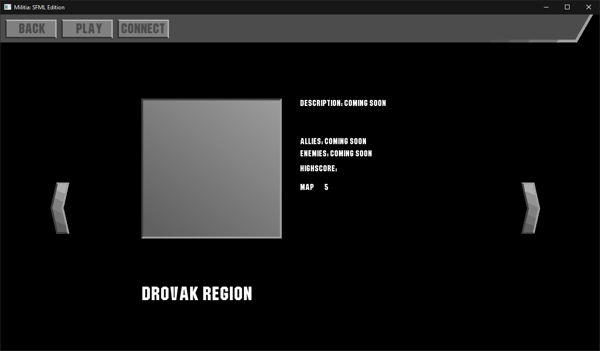
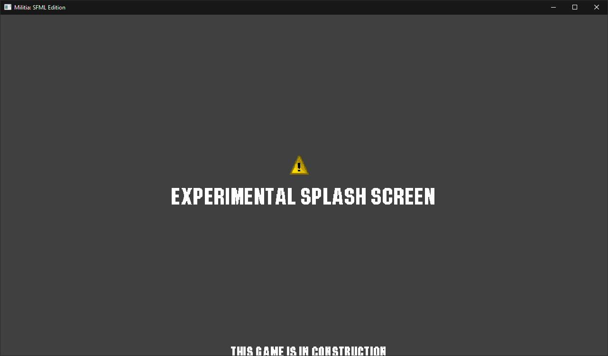
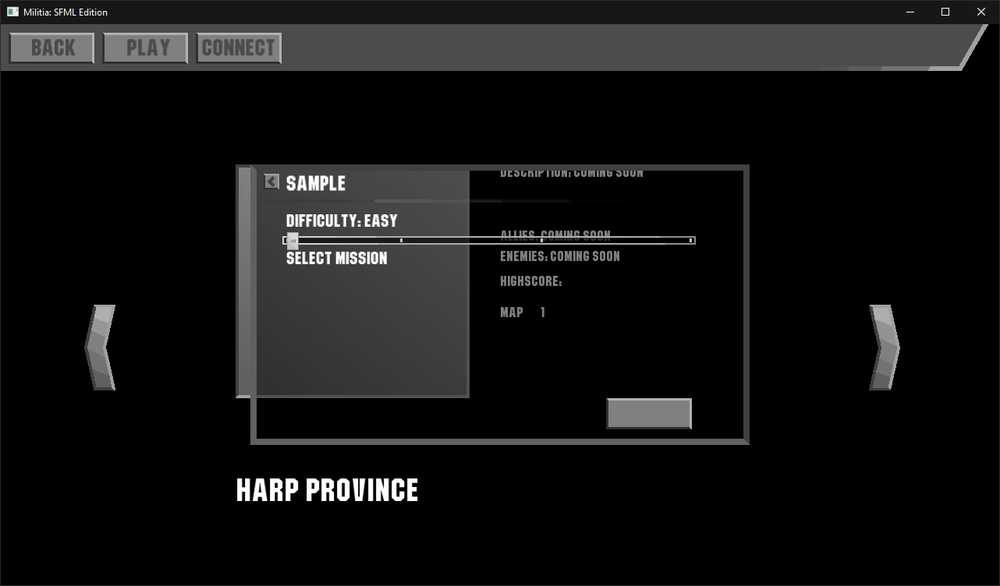
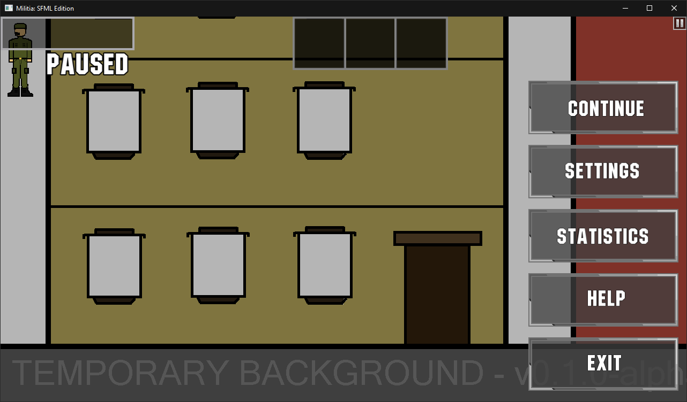
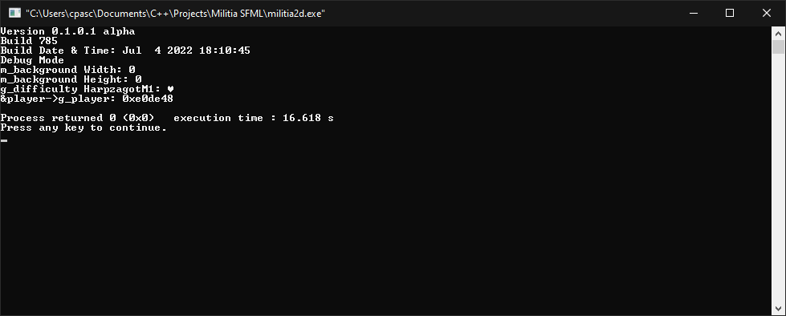

Additions
General
- Initial Alpha Release.
Game HUD
- Added 3 Boards
- Has transparent texture.
- Added Pause Button
- Has transparent texture.
- Added Scorebar
- Has transparent texture. (PR#2)

An image of Game HUD with off-centered boards as of v0.1.0.1 alpha build 606 on November 19, 2021
The image consists of temporary background. Actual brackground (and other game textures) remains work-in-progress.
Game Selector
- Added partially functional game selector.
- Includes the following maps:
- Harp Province
- Jyzor, Harp, & Islamic Region (unused)
- Hazax (Hazakh) & Hazyaz Region (unused)
- Region 3 (unused)
- Drovak Region (unused)
- Back button can be accessed by pressing
Backspacekey. - Play button can be accessed by pressing
Enterkey. - Connect button (unused) can be accessed by pressed
Ckey. - Left and Right arrows can be accessed by pressing
LeftandRightarrow keys.

Game Selector as of v0.1.0.1 alpha build 785 on July 5, 2022
Main Menu
- Added temporary splash screen (3 seconds).
- Added main menu buttons including Play and Quit button (Statistics, Settings & Help is currently unusable).
- Main menu buttons cannot be pressed with keyboard buttons.
- Added version text on main menu

Splash Screen as of v0.1.0.1 alpha build 785 on July 5, 2022

An image of Main Menu as of v0.1.0.1 alpha build 229 on August 28, 2021
Map Options
- Added map options.
- Only difficulty slider and blank enter button works.
- Back button can be accessed by pressing
Backspacekey. - Blank enter/play button can be accessed by pressing
Enterkey. - The dialog box is named "Sample".
- Includes unused mission selector.
- Can only be accessed for Map 1.
- The background will be opaque or black if the window resolution is not 1280x720.

Map Options as of v0.1.0.1 alpha build 785 on July 5, 2022
Harpøzagot (Map 1)
- Added unfinished backgrounds
- Uses unfinished backgrounds.
Player
- Has temporary texture.
- Breathes every 1 second.
- Does not move.
- Does not parachute but it displays a prototype parachute animation with number 18.
Pause Menu
- Added pause menu buttons including Continue and Exit button (Statistics, Settings & Help is currently unusable).
- Can be accessed by clicking pause button in game or by pressing
Escapebutton on keyboard. - Continue button can be accessed by pressing
Enterbutton. - Exit button can be accessed by pressing
Qbutton.

An image of Pause Menu as of v0.1.0.1 alpha build 785 on July 5, 2022
Technical Additions
Assets
- Has several unused assets in res/ folder.
Debug Window
- Is enabled by default.
- Displays debug info including version number, build date, debug mode, error codes, and technical information.

Debug Window as of v0.1.0.1 alpha build 785 on July 5, 2022
Engine
- Uses DzergeroEngine.
Entire Game
- Written in C++.
- Uses SFML Library.
Error Codes
- Added the following error codes:
- 000_UNKNOWN_ERROR (unused)
- 001_SYNTAX_ERROR
- 002_INVALID_DIFFICULTY
- 003_CONDITIONAL_OPERATOR
- 004_LOADING_ERROR
- 404_NOT_FOUND
Fixes
Graphical User Interface
- Fixed a bug causing left and arrow buttons to have different texture. (Issue #34)
- Fixed a bug that prevents difficulty slider in map options to work correctly. (Issue #6)
- Fixed incorrect texture of back button from map options screen. (Issue #38)
- Splash Screen will now stretch to the whole window. (Issue #5)
- Fixed pause button flickering bug by taking a screenshot of the last state before entering pause menu.(Issue #7)